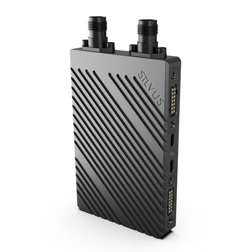
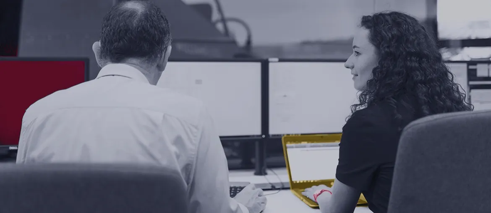

Sort access first
Map the StreamCaster and StreamScape backlog into lab-bound, remote-ready, and clearance-bound work before the first sprint.
For Ajit Warrier and Silvus Technologies
Saw Silvus is hiring for embedded software, web interface, software QA, and Southern Europe growth. That points to more StreamCaster and StreamScape work than a core team can absorb alone.

The signal says Silvus is scaling product and market work at the same time. StreamCaster hardware, StreamScape, ATAK plugin support, and new regional demand all touch the same engineering path. The hard part is keeping firmware, web tools, diagnostics, and test automation moving while security rules stay strict. If hiring lags, field issues and new customer work can pull senior engineers away from R&D.
Start with a six-week pilot, weekly demos, and work split by access level.
Map the StreamCaster and StreamScape backlog into lab-bound, remote-ready, and clearance-bound work before the first sprint.
Build test harnesses for firmware, API, and GUI flows that catch regressions before hardware lab time is booked.
Move selected StreamScape web and ATAK plugin tasks through weekly demos with your engineering owner.
Leave clean handoff notes, test data, and CI checks so your team can own every release.
Elinext is a full-cycle software development company since 1997, with about 700 in-house specialists and no freelancers. For Silvus, the fit is secure, long-running engineering work in complex systems. We bring ISO 27001 and ISO 9001 practices, plus Java, C/C++, React, Python, DevOps, and QA skill. We can work as a dedicated squad under your product owner, with clear weekly control. That matches the StreamCaster support model above.

Physical and virtual telecom assets in one view.
Read case studyJava and QA support for hard installs.
Read case study